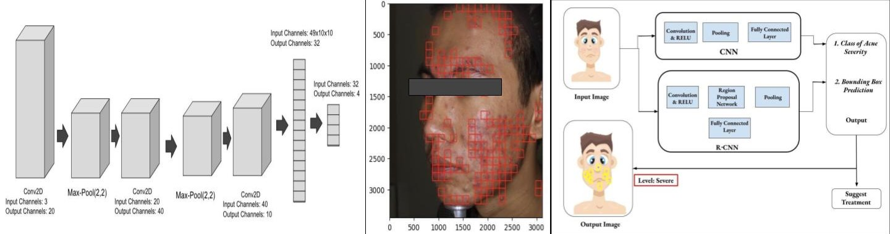
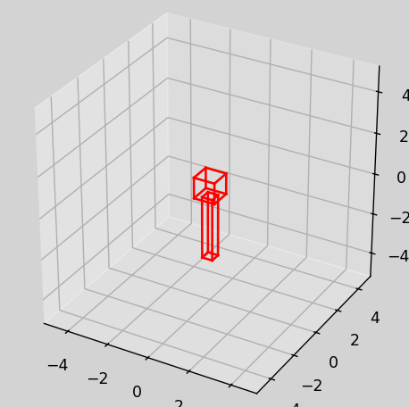

Languages
C
C++
JavaScript
Java
Python
C#
Verilog
YAML
Assembly RISC-V
Databases
SQL
MySQL
PostgreSQL
MongoDB
DB2
Web Development
HTML/CSS
React.js
Angular
Node.js
Vue
Next
Mobile Development
Swift
Kotlin
React Native
Flutter
Machine Learning
PyTorch
TensorFlow
Keras
OpenCV
HuggingFace
Cloud Services
AWS
Azure
Firebase
DevOps
Docker
Kubernetes
Jenkins
Git
Work Experience
Collins Aerospace
CO-OP Student | 09/03/2024 - Current
- Working on an internal tool written in Python (PyGUI) to create seamless processing of actions on the machine floor and the operators.
- Management of an SQL server: administrative and end-user level.
- Creating and maintaining robust desktop apps (.NET & C#) with a creative approach for machine floor operators.
TengriNews
Software Engineering Intern | 07/01/2024 - 08/30/2024
- Worked in the data science/ML department at Tengri News.
- Processed more than 1M comments for sentiment analysis (RoBERTa). Challenges involved training the model for Kazakh & Russian languages with various approaches (translation through an API & creating own encodings).
- Created a prototype for a hybrid recommendation system, which was initially based on LightFM. End product was able to recommend articles to users (of which ~70% found to be interested in).
Jusan Invest JSC
Software Engineering Intern | 06/01/2023 - 08/20/2023
- Worked in the frontend team of “Jusan Invest”, a subsidiary of one of Kazakhstan’s largest banks Jusan focusing on investment banking.
- Developed a new regression testing suite, covering major frontend components of the Jusan web application using Cypress and Selenium frameworks, which helped reduce the amount of code bugs by 23%.
- Implemented a test coverage visualization tool & maintained pipelines (Docker) in GitLab
- Collaborated in the development of a limited time event at Jusan Invest: “Raffle” where I was a part of the team responsible for developing frontend for the mobile application (React Native).
Projects
Geographic Information System
Created as part of the ECE297 course (Software Design and Communication)
- Coding done in C/C++
- Graphics Library: OpenGL
- Raw Geographic Data: OpenStreetMap
- Live Traffic Data: TomTom
- Live Weather Data: OpenWeatherMap
- Pathfinding: A* & Dijkstra
- Smart Text Suggestions: BK-Trees
- Level of Detail Loaded According to Zoom Level for Responsiveness
Acne Detection & Localization
Created as part of the APS360 course (Applied Fundamentals of Deep Learning)
- Coding done in Python
- Libraries Used: PyTorch, Numpy, Pandas
- ACNE04 Dataset
- Data Processing: Removing Poor Quality Images Using Hugging Face
- Trying Out Various Architectures, Ultimately a Simple Architecture Was Chosen Due to Poor Quality of Data
- Development of RCNN Algorithm
- Accuracy: 62% Precision: 73%

Digital Pen
- Microcontroller Used: STM32F4 series
- MPU6050 (Accelerometer + Gyroscope)
- Peripheral is attached on top of a regular bullet pen (3D printed model)
- Position of the pen is estimated using readings from gyroscope and accelerometer based on Kalman filter (Complementary Filter in earlier iterations)
- Then when a user draws something on regular paper (or on any medium), we get the copy of the drawing in digital format
- Communication with I2C (DMA)
